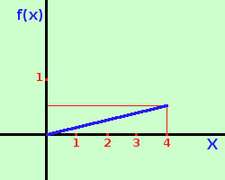
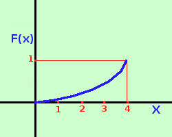
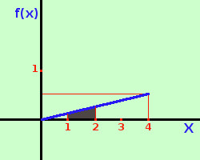

|
ora possiamo definire la funzione di ripartizione su ℜ come
ed abbiamo che vale sempre ∫ab f(t)dt = 1 Esempio: Determinare il valore della costante k in modo che la funzione y = kx sia la funzione densita' di una variabile casuale continua che assume tutti i valori compresi nell'intervallo [0;4] Per calcolare il valore di k bastera' trovare l'integrale definito da 0 a 4 della funzione densita' e porre il risultato uguale ad 1 (probabilita' certa) ∫ax f(t)dt = ∫04 kx dx = | ½kx2|04 = 8k - 0 = 8k pongo il valore dell'integrale uguale ad 1 8k = 1 k = 1/8 quindi la funzione densita' e'
 Mentre la funzione di ripartizione e' il risultato dell'integrale cioe'
Possiamo dare una rappresentazione della variabile casuale continua ponendo in ascissa i valori della variabile aleatoria X e in ordinata i valori f(x) della funzione densita'; da notare che l'area sottesa fra f(x) e l'asse delle ascisse vale sempre 1. Nel grafico a destra, per ragioni di rappresentazione, ho usato unita' di misura diverse per ascisse ed ordinate La variabile casuale continua viene anche rappresentata graficamente prendendo in ascissa i valori X della variabile aleatoria ed in ordinata i valori F(x) della funzione di ripartizione;  a destra un esempio dal nostro solito esercizio: Variabile aleatoria X continua sull'intervallo [0;4] con funzione di ripartizione
E' una parte di parabola con vertice l'origine e concavita' verso l'alto Nota inoltre se abbiamo F( x1) = ∫ax1 f(t)dt e F( x2) = ∫ax2 f(t)dt con x1≤x2 Ne segue Pr (x1≤X≤x2) = F(x2) - F(x1) = ∫x1x2 f(x)dx Cioe'
 Quindi, d'ora in avanti, per calcolare una probabilita' in un intervallo potremo calcolare un area mediante il calcolo integrale Ad esempio calcoliamo ora la probabilita' che la variabile aleatoria assuma valore tra 1 e 2 ∫12 1/8 xdx = | 1/16 x2|12 = 4/16 - 1/16 = 3/16 E' rappresentata in figura dall'area di colore grigio-scuro | .

|

|

|

|